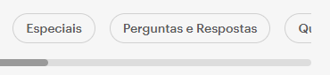
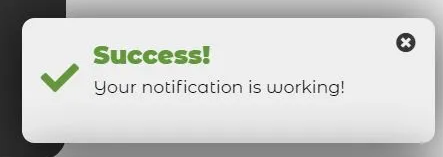

Create Cognitive Walkthrough
In the CogST main menu, select the option "Define CW" to start setting up the Walkthrough.
1 - Fill in the Initial Parameters
Task to Perform: A brief description of the final objective of the task to be carried out.
Google Sheets Link: Link to the Google Sheet where the results will be sent. The link must have active editing permissions.
Define Persona: Specify the profile of the target audience or the fictional character representing the person for whom the task will be performed. The persona should include basic information such as approximate age, profession/occupation, goals, main difficulties, and the expected communication style.
2 - Create Steps
Each step should represent a stage required to complete the task defined in the previous section.
Click the "+" in the top-right corner to create a new step.
For each created step, click the "→" icon to edit the step name, making it clear what the person completing the CW needs to do to accomplish the defined task.
3 - Export CW
After completing the definition of the CW and its respective steps, you can export the CW by clicking the green button at the bottom of the page "Save and Export". This JSON file is important because it will be required by the evaluators to fill in the CW.
In the CogST main menu, select the option "Fill CW" to start completing a previously defined Walkthrough.
1 - Import CW
Select the Walkthrough file that needs to be completed and click the "Import and Start" button.
2 - Fill the Steps
For each step, answer the questions related to the Cognitive Walkthrough (You can select a step by clicking the "→" icon).
3 - Finish CW
After answering all the steps, click the green button at the bottom of the page "Save and Export".
Will users be trying to produce whatever effect the action has?
Description
The user must have a clear intention or motivation to perform the action. This means the interface should guide the user toward wanting the outcome, making it obvious why the action is useful or necessary. If the purpose of the action is unclear, users may not attempt it at all.
Will users see the control (button, menu, switch, etc.) for the action?
Description
Ensure that the actions required to complete the step are visible and accessible.
Bad Example
Step: Click the "Quizzes" button
In the image and task shown above, the "Quizzes" button is not fully visible to the user, which may cause difficulties in completing the action.
Once users find the control, will they recognize that it produces the effect they want?
Description
The user, upon seeing the action, must understand that it leads to the desired result. This is achieved through clear and visible icons/descriptions.
Example
Step: Create the Report
If the button is labeled “Export Report,” the user understands that they will obtain the file. However, if it is labeled only “Export,” they may not immediately associate it with the report, which could cause confusion when completing the step.
After the action is taken, will users understand the feedback they receive so that they can proceed to the next action with confidence?
Description
After performing an action, a notification or some indication should appear to show that the action is being processed or was successful. If nothing happens, the user may feel lost.
Good Example
In the image above, we see an example of how users can be informed whether their action was successful or not.
To finalize the CW, it is necessary to create a report based on the aggregated results.
Create the Report
Click the "Create Report" button on the home page and select the JSON file corresponding to the desired CW.
View the Results
In the Google Sheet provided as a parameter in the "Create CW" step, a new sheet named "Report" will be generated containing relevant information from the completed CW.